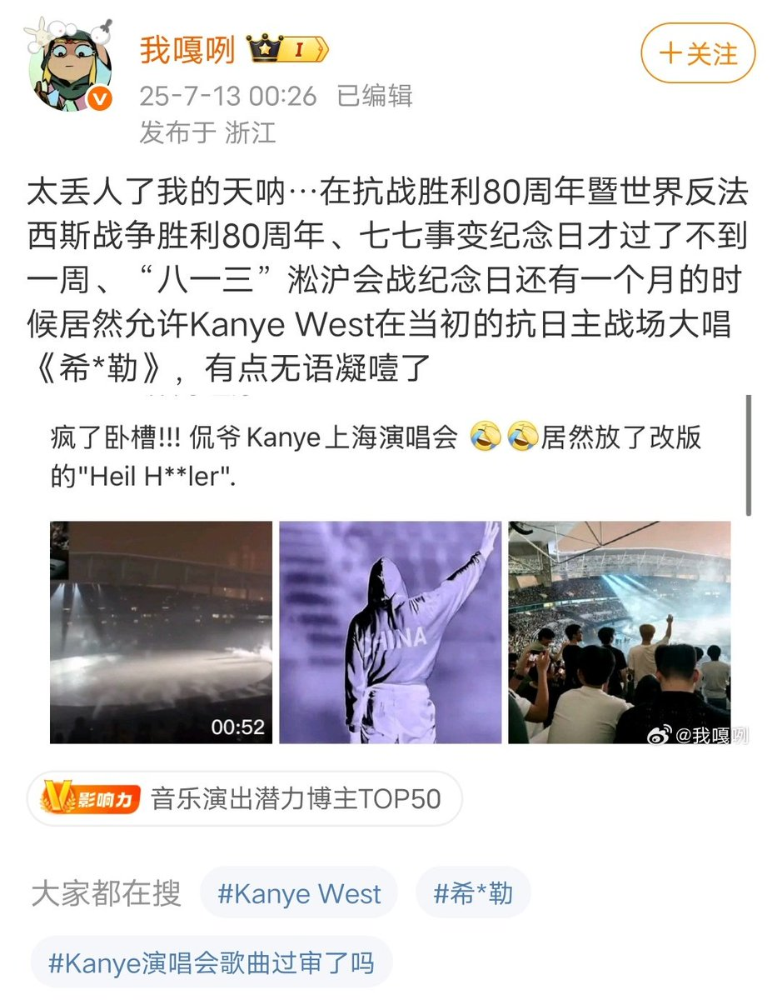
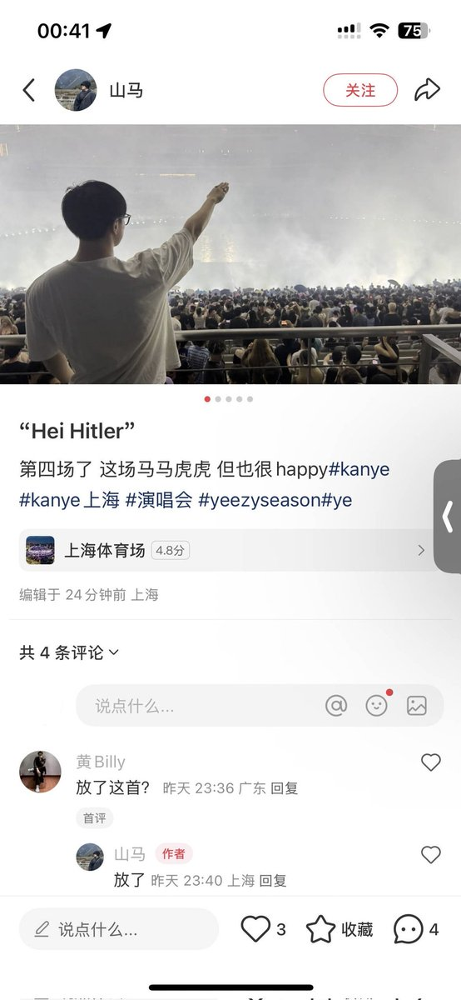
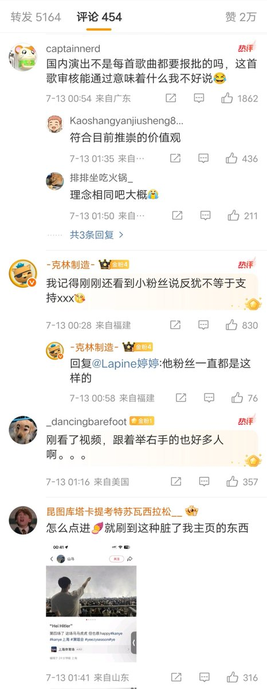

VVV
@VVV8964
好多b友抖友都很喜欢搞种族歧视或者纳粹的这些东西，幻想自己是潮酷鉴证哲人王，哈哈你也喜欢那个希特勒吗真是太有意思了
实际上希特勒要是复活了第一个清洗拆腻子



Jacobson🌎🌸贴贴BOT
@jakobsonradical
据了解，近日，美国男歌手Kanye的上海演唱会现场播放了“Heil Hitler”这首歌。现场有观众高举右手。讽刺的是，今年中国正准备纪念世界反法西斯战争胜利80周年。
此前，Kanye因为赞美希特勒已经被澳洲拒绝入境。 https://t.co/NxA46GX5rL